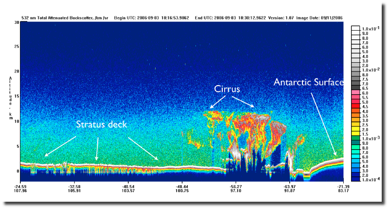

Documentation
Code availability: On GitHub, here.
Motivation
We know that air mass transformation--the process by which warm, moist air from the mid latitudes transforms into cold, dry air in the Arctic--plays a critical role in the Arctic climate (eg. _____). As of now, most of what we know about air mass transformations comes from studies that rely on physical models of the atmosphere (eg. ____). Comparatively little of what we know comes observational studies (eg. _____). While I think the modeling studies have provided a decent conceptual picture of what air mass transformations look like, the picture is probably incomplete because all atmospheric models provide incomplete representations of the Arctic atmosphere. In other words, we have a rough idea of what the transformation process should look like, according to theory, but don't really know what the process looks like in the real atmosphere, where all complexities are at play.
I've built this tool to help look inside the air mass transformation process. The reanalysis fields (top) give broad pictures of transformation events, while the satellite observations (bottom) provide snapshots of the clouds in those transformation events. The tool emphasizes cloud observations because cloud processes are a critical part of air mass transformations.
Tool Overview
A sample map generated by the data viewing tool is available below.
The top panel is meant to provide a spatial overview of air mass transformation events. On the panel, you will find the satellite trajectory for a given radar pass (plotted in black), and the field for a given ERA5 reanalysis variable (plotted as an image) at the hour closest to the radar pass' representative time. The panel's title provides the name of the ERA5 field, as well as the representative time for the given radar pass. The continental boundaries are also plotted in black to provide spatial reference. The X and Y axes show coordinates in the Polar Stereographic coordinate system (EPSG:3995), while the latitudes, longitudes, and times for every fortieth radar profile are available through a hovertool, which becomes active when you mouse over the top panel. The tools in the toolbar on the top right can be used to zoom, pan, reset, and save a snapshot of the figure.
The bottom panel shows measurements from the satellite's cloud penetrating radar. In the bottom panel in the sample figure, the radar reflectivity is plotted. A gray line appears on the bottom panel whenever your mouse passes over the top panel. This line shows which profile the hovertool on the top panel is currently highlighting, and is useful for drawing spatial connections between the radar trajectory on the top panel and the radar measurements on the bottom panel. Scroll-based zooming is automatically enabled for the bottom panel.
Data Sources
CloudSat
CloudSat is a polar orbiting satellite equipped with a cloud-penetrating radar.
Through high-frequency radar profiles of the atmosphere, CloudSat provides cross sections
of cloud structures underneath its orbit. An example of such a cross-section for Super
Typhoon Atsani (2015) is provided below
(Image source).

Several CloudSat measurements are available through the data viewer:
- Radar Reflectivity: measures how much of the radar signal is scattered back to the radar at a given altitude. Profiles of reflectivity provide information about cloud structure, with higher reflectivity values typically indicative of "thicker" clouds.
- Cloud Classification: Classification of each cloud layer, according to the algorithm described [here]. Clouds are classified as _____.
- Ice water content (g/m3): Mass of ice in a specific volume of air. The ice water content is inferred from the CloudSat observations and the temperature at each location. The retrieval methodology is described [here].
- Liquid water content (g/m3): Mass of liquid in a specific volume of air. Like the ice water content, the liquid water content is inferred fromt he CloudSat measurements and the temperature at each location. The retrieval methodology is described [here].
CALIPSO
CALIPSO is another polar orbiting satellite, which traditionally has the same orbital trajectory as
CloudSat and [leads or follows] CloudSat by approximately _____ minutes. CALIPSO is outfit with
a lidar instrument, which operates at 532 nm and 1064 nm. Because these are shorter wavelengths
than are used by CloudSat's cloud penetrating radar, the CALIPSO lidar is
more sensitive to small dust/ice/liquid particles and droplets
in the atmosphere. CALIPSO observations effectively complement CloudSat observations
because they typically observe the same clouds, have a higher resolution,
are more likely to detect thin cloud layers, and can detect
clouds that are closer to the surface. However, CALIPSO osbervations cannot be used
instead of CloudSat observations because the CALIPSO lidar is unable pass through
thick clouds because it is so sensitive. Below is a sample of CALIPSO lidar observations with at 532 nm
(Image source).

CALIPSO observations are not yet available through the data viewer. They will be added soon.
ERA5
ERA5 is the lastest atmospheric reanalysis product produced by the European Centre for Medium-Range Weather Forecasts (ECMWF). ERA5 uses a weather model and vast amounts of historical observations to infer the atmospheric state everywhere on the globe, hourly from 1979-present. While ERA5 does not provide a perfect picture of the atmospheric state, it provides a good enough picture to infer large-scale setups for air mass transformation events.
Several CloudSat measurements are available through the data viewer. Note that variables given at 850 mb are at about 1500 m of altitude, and variables given at 700 mb are at about 3000 m of altitude, depending on conditions.
- Temperature at 2 m (K)
- Mean sea level pressure (mb)
- Temperature at 850 mb (K)
- Temperature at 700 mb (K)
- Specific humidity at 850 mb (g/kg). The specific humidity is the ratio of the mass of water vapor to the total mass of air in a piece of the atmosphere.
- Specific humidity at 700 mb (g/kg)
- Cloud ice water content at 850 mb (g/kg). The cloud ice water content is the ratio of the mass of ice to the total mass of the air in a piece of the atmosphere.
- Cloud ice water content at 700 mb (g/kg)
- Cloud liquid water content at 850 mb (g/kg). The cloud liquid water content is the same as the cloud ice water content, but is for cloud liquid instead of cloud ice.
- Cloud liquid water content at 700 mb (g/kg)
- E/W Wind at 850 mb (m/s). Winds to the east (westerly winds) are positive.
- E/W Wind at 700 mb (m/s)
- N/S Wind at 850 mb (m/s). Winds to the north (southerly winds) are positive.
- N/S Wind at 700 mb (m/s)
- Vertical wind velocity at 850 mb (mm/s). Upward motion is positive.
- Vertical wind velocity at 700 mb (mm/s)
Limitations
This tool is currently hosted through Heroku, which is free but places strict limitations on the sizes of web applications. Therefore, I'm only able to make ____ days of observations available to you. If you'd like to use the tool to explore data on different days, please fork the the GitHub repository and set the tool up on your own machine.